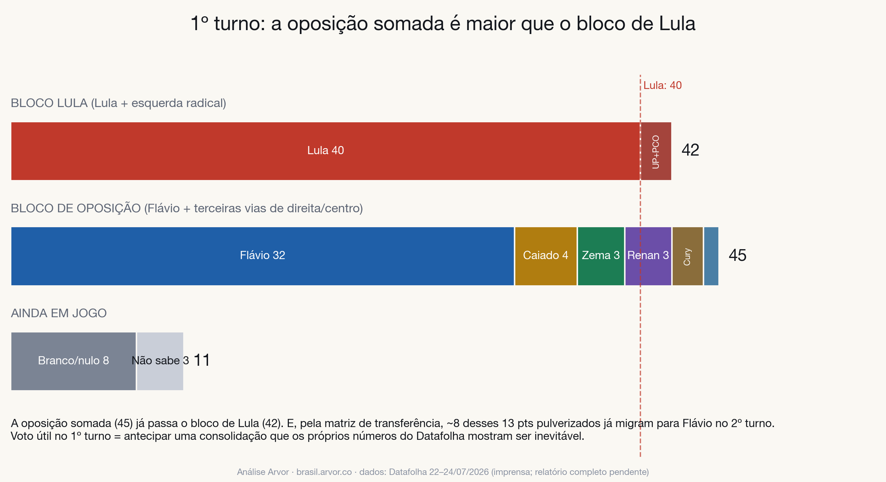

<!-- Bloco: blocos do 1º turno / voto útil — datafolha_072026.html -->
<!-- ESTILO DE PRE-VISUALIZACAO: o dossie final (docs/datafolha_072026.html) usa o
     CSS da casa — remova este bloco <style> ao colar la. Os src das imagens apontam
     para ../../../docs/img/…; na publicacao troque para img/datafolha_072026/…. -->
<style>
  body { margin: 0; background: #faf8f3; }
  .achado {
    max-width: 760px; margin: 0 auto; padding: 48px 24px 64px;
    font-family: "Inter", -apple-system, "Helvetica Neue", Arial, sans-serif;
    color: #14171d; line-height: 1.65; font-size: 17px;
  }
  .achado .kicker {
    text-transform: uppercase; letter-spacing: .14em; font-size: 12px;
    font-weight: 700; color: #b07d10; margin: 0 0 10px;
  }
  .achado h2 {
    font-family: "Fraunces", Georgia, "Times New Roman", serif;
    font-size: 34px; line-height: 1.15; margin: 0 0 18px; color: #14171d;
  }
  .achado p { margin: 0 0 16px; }
  .achado p.metodo {
    font-size: 14.5px; color: #5e6675; background: #ffffff;
    border: 1px solid #dde2ec; border-left: 4px solid #b07d10;
    border-radius: 8px; padding: 14px 16px;
  }
  .achado strong { color: #14171d; }
  .achado figure { margin: 26px 0 8px; }
  .achado figure img {
    width: 100%; height: auto; display: block; border-radius: 12px;
    border: 1px solid #dde2ec; box-shadow: 0 12px 34px rgba(18,24,33,.10);
    background: #fff;
  }
  .achado figcaption { font-size: 13.5px; color: #8b93a3; margin-top: 10px; }
  .achado ul.numeros { margin: 18px 0 0; padding: 0 0 0 20px; }
  .achado ul.numeros li { margin: 0 0 10px; }
</style>
<section class="achado" id="blocos-1t">
  <p class="kicker">Achado · 1º turno</p>
  <h2>A oposição somada é maior que o bloco de Lula</h2>
  <p>
    Lula tem 40 e, com a esquerda radical, chega a <strong>42</strong>. A oposição
    somada — Flávio 32, Caiado 4, Zema 3, Renan 3, Cury 2, Daciolo 1 — faz
    <strong>45</strong>. E há 11 pontos em branco/nulo/indecisos. A matemática do voto
    útil é direta: pela matriz de transferência, <strong>~8 dos 13 pontos</strong>
    pulverizados na direita/centro já migram para Flávio no 2º turno de qualquer
    maneira. Antecipar essa consolidação para o 1º turno colocaria Flávio na casa dos
    40 — empatado ou à frente de Lula — com a vantagem de chegar ao 2º turno como
    vencedor do 1º.
  </p>
  <figure>
    
    <figcaption>
      Voto útil no 1º turno = antecipar uma consolidação que os próprios números do
      Datafolha mostram ser inevitável no 2º.
    </figcaption>
  </figure>
</section>
